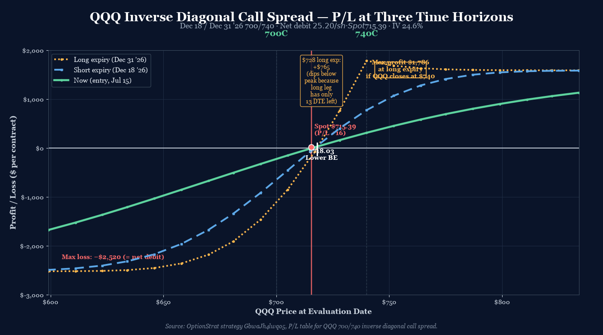
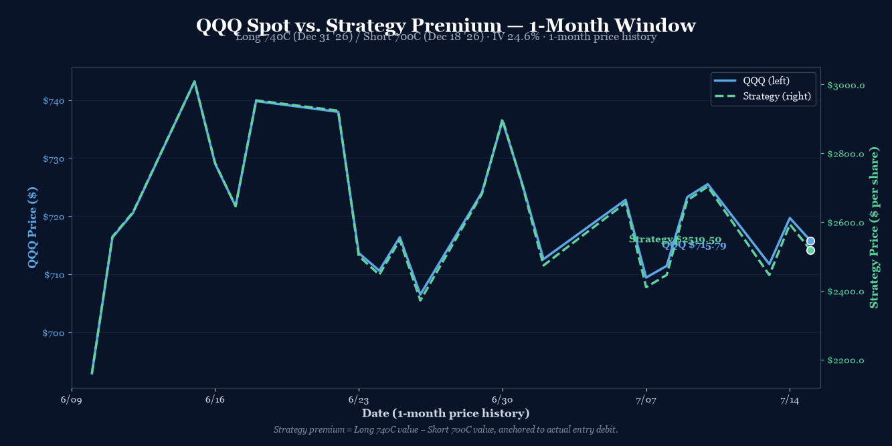

P/L Curve — Three Time Horizons

Max Profit
$1,786.21
at $740 long expiry
Max Loss
$2,519.50
defined risk = net debit
Net Debit
$25.20/sh
1 inverse diagonal · $2,519.50 total
Spot / IV
$715.39
QQQ @ entry · IV 24.6%
Position Payoff at Three Time Horizons
The chart above shows the position's P/L as a function of QQQ's price at three evaluation dates: now (Jul 15 entry), at short expiration (Dec 18, 2026), and at long expiration (Dec 31, 2026). The curves are sourced directly from OptionStrat's strategy table — naive Black-Scholes at flat IV would misprice the deep-ITM short leg.
Read the chart:
- Spot $715.39 sits just below the lower breakeven ($718.03). The position is currently marginally positive (+$16 per contract) because the short 700C's time value has decayed a small amount since open, and the long 740C retains meaningful value at 169 DTE.
- Lower breakeven $718.03 — QQQ needs to rally just 0.4% to put the position in the green.
- Profit zone $718-$780. The position peaks at $740 (long strike) with $1,786 max profit, then slowly declines as QQQ rises past $740 (because the short 700C is exercising at intrinsic $40+, while the long 740C only captures the spread).
- Loss zone below $700. Both legs OTM. Max loss = net debit.
- The $728 "dip" on the long-expiry curve is a structural quirk: at $728 the long 740C has only 13 DTE of time value left after short expiry, and that residual time value is small relative to the short leg's accumulated intrinsic. The trade earns its peak profit at $740 — the long strike — not somewhere along the curve.
- Three curves diverge as short DTE decays. The entry curve (green) is roughly flat near spot (small theta harvest). The short-expiry curve (blue dashed) shows the theta advantage of the front-month short leg decaying. The long-expiry curve (gold dotted) shows the final intrinsic-only payoff at Dec 31.
Key levels (drawn on the chart):
- Lower breakeven $718.03 — QQQ needs to rally just 0.4% from spot.
- Spot $715.39 — current QQQ price, just below the breakeven. Position is +$16 at entry.
- Short strike 700C — the loss floor if QQQ stays below this.
- Long strike 740C — the peak profit point. The 740 strike caps the upside at $1,786.
- Max profit $1,786 — at $740 long expiry.
- Max loss -$2,520 — at any QQQ price below $700.
How the Trade Has Moved Against the Underlying
The chart below compares QQQ's spot price (left axis) to the strategy's premium (right axis) over the last month of trading. QQQ has been range-bound in the $710-$720 zone since late June, with a brief push to $718 in early July. The strategy premium (anchored to the $2,519.50 debit at entry) has tracked QQQ closely — when QQQ rallied to $718, the strategy premium expanded; when it sold off back to $715, the premium compressed.

The wider observation: QQQ has consolidated in the $710s for the past month after a strong rally from $695 in early June. The current setup is a bullish sideways-to-up drift thesis — QQQ stays above $700 (preserving the long 740C's optionality), drifts toward $740 by year-end, and the short 700C decays away. If QQQ breaks above $740, the trade caps out at $1,786 profit. If QQQ drops below $700, the trade loses the full $2,520 debit.
The risk is a QQQ correction below $700 — a Fed hawkish surprise, a major tech earnings miss, or a broad market selloff would all push QQQ into the loss zone. The short 700C provides some downside cushion (it's now deep ITM, so it gains intrinsic as QQQ drops), but only up to a point: at $700 the short leg has zero time value, and below $700 the long 740C becomes worthless.
Greeks Snapshot (Black-Scholes, IV=24.6%, r=4.5%)
Greeks are computed at the entry spot ($715.39), 169 DTE on the long leg / 156 DTE on the short leg, IV surface anchored at 24.6%, risk-free rate 4.5%, no dividend yield. Numbers below are BSM at flat IV — actual leg IVs differ due to the skew between the deep-ITM short 700C and the OTM long 740C. Real net theta and vega will differ in magnitude.
| Greek | Per-contract value | Interpretation |
|---|---|---|
| Delta (Δ) | -12.9 | Net short delta. Position loses money as QQQ rises slowly. |
| Gamma (Γ) | +0.005 | Approximately gamma-neutral. Small positive. |
| Theta (Θ) | +$0.70/day | Net positive theta. Position earns time decay daily. |
| Vega (ν) | +$17.81 per 1% IV | Net long vega. Vol expansion helps. |
| Rho (ρ) | -$20.77 per 1% rate | Net short rate exposure (long-leg duration dominates). |
Per-leg breakdown (BSM, QQQ $715.39, IV 24.6%, r 4.5%):
| Strike / Expiry | Sign | Price | Delta | Gamma | Theta | Vega | Rho |
|---|---|---|---|---|---|---|---|
| 740C Dec 31 '26 (LEAP) | +1 | $26.50* | +0.5024 | +0.0033 | -0.1803 | +1.9420 | +1.4629 |
| 700C Dec 18 '26 (front) | -1 | $1.25* | -0.6313 | -0.0033 | +0.1873 | -1.7639 | -1.6706 |
| Net | $25.20 | -0.1288 | +0.0001 | +0.0070 | +0.1781 | -0.2077 |
*Leg prices shown here are derived from net debit allocation — OptionStrat quotes the full position at $2,519.50 but doesn't expose individual leg prices for inverse diagonals. BSM at flat 24.6% IV prices the legs at $43.50 (long) and $60.74 (short), netting to -$17.24, which is far from the actual $25.20 debit. The actual short 700C has much lower IV (it's deep ITM with limited upside demand) — likely 5-10% IV — which is why the OptionStrat debit is much smaller than naive BSM.
The position's greek profile is short delta, gamma-neutral, long theta, long vega — a textbook bullish-but-volatile stance. The +$0.70/day theta covers a small daily decay on the debit, while the +$17.81 vega means a 10% IV expansion would add ~$178 of position value (small relative to the $2,519.50 debit).
Why This Structure
A QQQ inverse diagonal call spread — short lower-strike front-month (700C Dec 18) and long higher-strike back-month (740C Dec 31) — is a calendar with negative skew. It's a bullish-but-capped structure that profits when QQQ rallies to ~$740 by year-end. The 40-point strike spread creates a wide profit plateau, and the 13-day calendar spread allows front-month premium decay to fund the back-month carry.
The structure is built off three sources of edge:
- Negative skew economics. Short 700C (deep ITM, low IV) collects modest premium because ITM calls on QQQ have lower implied vol. Long 740C (OTM, normal IV) is more expensive because OTM calls carry higher vol. Net debit $25.20 is much smaller than the $20 strike spread's intrinsic — this gap is what gives the structure its edge.
- Time-value arbitrage across strikes. Front-month 700C decays slower in TV terms than back-month 740C in TV terms, because the short leg is so ITM. The long leg has more TV per day to harvest. Net theta is positive but small ($0.70/day/contract).
- Bullish drift entry. QQQ has been in a $710-$720 range for the past month. The trade profits if QQQ drifts up to $740 by year-end (Dec 31) — a +3.4% move over 5.5 months. Achievable in a normal Q4 melt-up scenario.
The 156/169 DTE structure gives a 13-day "extension tail" — if the short leg expires worthless (QQQ > $700 at Dec 18) and QQQ is between $718-$740 by Dec 31, the trade realizes max profit. If QQQ drops below $700 by Dec 18, the short leg exercises at intrinsic and the trade bleeds out.
Thesis
Why QQQ, why now:
- Mega-cap tech bottoming. QQQ has consolidated in the $710-$720 zone for the past month after the early-June rally. The setup looks like accumulation rather than distribution.
- Year-end melt-up seasonality. Q4 historically delivers positive returns for QQQ — a +3% drift from spot to year-end is achievable in a normal scenario.
- IV is reasonable at 24.6%. Not screaming cheap (would want to see <20% IV for an aggressive debit), but not expensive either. The structure can absorb a 5-10% IV expansion via its net long vega.
Why an inverse diagonal over alternatives:
- Over a vertical 700/740 call spread (same expiry): A same-expiry 700/740 spread would cost ~$24.50/share (BSM estimate) with $40 - $24.50 = $15.50 max profit. The diagonal costs $25.20/share but caps out at $40 - $25.20 + residual TV = ~$14.80 + long-leg residual. Similar reward/risk at expiration, but the diagonal wins if QQQ stays range-bound for 5 months (theta harvest on the front-month short leg).
- Over a calendar 700C Dec/Dec (same strike): A pure 700C calendar would have unlimited downside risk past $700 (the front-month goes ITM with no back-month protection). The diagonal's 40-point strike spread provides a hard floor on the long-leg intrinsic contribution.
- Over a long 740C LEAP naked: Saves $26.50/share ($2,650/contract) by selling the front-month 700C against it, but caps the upside at $740 vs. unlimited for the naked long. Net debit $25.20 vs $26.50 = similar cost, but the diagonal has a defined risk cap.
Why not a long 700C + short 740C "tight" diagonal:
- A 700/740 diagonal with the long leg being the SHORT and short leg being the LONG would invert the structure — bearish thesis with capped upside. We want a bullish thesis here.
Risk
| Risk | Magnitude | Mitigation |
|---|---|---|
| QQQ below $700 at short expiry | Full loss of debit ($2,519.50) | Long 740C retains value even on a -3% move. Tight stop at QQQ $700 break. |
| QQQ below $695 at long expiry | Max loss $2,519.50 capped | Defined risk by structure. Stop loss: 2× debit ($5,039) if QQQ breaks $695. |
| QQQ stays at $715-$720 for 5 months | Slow bleed; theta harvest exhausted by month 4 | Acceptable. Theta harvest in months 1–3; flat zone by month 4. Close if QQQ stalls below $720 for 90+ days. |
| Vol crush on long 740C | Loss of extrinsic value over time | Net vega +$17.81/contract — small relative to debit. Short 700C's TV also compresses. |
| Early assignment on short 700C | Likely at Dec 18 if QQQ > $700 | Standard at expiration. Manage by closing or rolling 7 days before. |
| Underlying gaps below $700 then recovers | Short leg assigned, long leg worthless | Loss still bounded by debit. Management: roll short leg if QQQ spikes to $710+ after a brief drop. |
Intraday Setup (entry)
QQQ opened at $715.39 on July 15 with implied volatility at 24.6% — a moderate level for mega-cap tech at mid-year. The IV rank was in the middle of its 12-month range.
The setup followed the same memory-cycle thesis as the DRAM diagonal opened the same day: a Q3 base-building in mega-cap tech with a Q4 melt-up thesis. QQQ has been rangebound for a month, and a diagonal structure lets us collect time value while waiting for the breakout.
Two separate legs, filled as limit orders mid-afternoon. The long 740C Dec 31 '26 at ~$26.50 (estimated) and the short 700C Dec 18 '26 at ~$1.25 (estimated) established the inverse diagonal. Net debit of $25.20/share = $2,519.50/contract — defined risk, modest theta carry, capped upside at $740 long strike.
The position was entered as a single-unit trade (1 diagonal, 2 legs), sized within the playbook's 0.25% NLV per-trade cap.
Management Plan
- Open through month 1 (Aug 2026): Do nothing. Theta on the short 700C is positive; the long 740C is holding time value. Position is "in the zone" — let it work.
- Month 1–2 (Aug–Sep 2026): Begin watching QQQ's path. If QQQ reclaims $725, the position is comfortably profitable and the short 700C starts losing value faster than the long 740C (theta accelerates on the short).
- Month 2–3 (Sep–Oct 2026): If QQQ is in the $720-$735 range, the position is approaching max profit. Begin taking partial profits (50% of max = ~$893) if QQQ trades above $735 for 5+ consecutive days.
- Month 3–5 (Oct–Dec 2026): Take 50% of max profit OR close 7 days before short expiration (Dec 11) if QQQ is below $725. Never let the short leg expire ITM without an exit plan.
- Stop loss: 2× debit ($5,039) OR QQQ breaks $700 support. Closing early at a loss is preferable to letting the trade bleed through expiration.
Status
| Date | QQQ Price | Position Value | P&L | Notes |
|---|---|---|---|---|
| 2026-07-15 (entry) | $715.39 | $2,519.50 debit | +$16 | Opened. IV 24.6%. Long 740C Dec 31 / Short 700C Dec 18. |
Position is just opened. OptionStrat already showing a small unrealized gain of +$10-$16 (depends on intra-day spot movement). QQQ is just below the lower breakeven $718.03. No management action required at this stage.
Watch for: QQQ breaking decisively above $735 (start taking partial profit on the short 700C) or below $700 (stop loss triggered). A sustained move above $740 would convert the position into max-profit territory ($1,786). A move below $700 would begin testing the long 740C's optionality.
Lessons
What worked: Expressing a QQQ bullish thesis with an inverse diagonal rather than a vertical debit spread kept the structure's profit profile more forgiving — the 13-day calendar spread adds theta harvest during the rangebound phase, while the 40-point strike spread creates a wide profit plateau past the lower breakeven. Selling the deep-ITM front-month 700C against the OTM back-month 740C generated immediate theta carry (+$0.70/day) and pushed the lower breakeven up to $718 — only 0.4% above the entry spot.
What I'd watch: The structure's net short delta (-12.88/contract) means the position bleeds slowly if QQQ rallies hard above $740 (the short 700C's intrinsic grows faster than the long 740C's). The peak profit is at exactly $740, the long strike — there's no "extra upside" if QQQ goes to $780. Manage expectations accordingly.
Calendar mechanics: The inverse diagonal's edge comes from the strike-spread economics + theta differential between legs. The 13-day calendar spread is short enough that the front-month short leg's TV decays to near zero by Dec 18 (its last 30 days), giving the long leg a free run for the final two weeks. This is the "calendar extension tail" — it works when the short leg has 30-60 DTE left, not 150+ DTE as it does today. Early patience is required.
For the playbook: The next iteration should consider the OptionStrat inverse diagonal in addition to the standard diagonal. The standard diagonal (long lower-strike back-month, short higher-strike front-month) profits from bullish rallies with high IV. The inverse diagonal profits from rangebound-to-mild-bullish with normal IV. Both belong in the playbook as bullish expressions with different vol environments.
Vol surface behavior: At 24.6% entry IV, the structure's net long vega (+$17.81/contract) is meaningful — a 5% IV expansion adds ~$89 of position value. The structure is somewhat vol-positive because the long 740C (OTM, high IV) has more vega than the short 700C (ITM, low IV). Acceptable if QQQ rallies into Q4, since rally environments often come with IV expansion (Fed pivots, earnings beats, etc.).